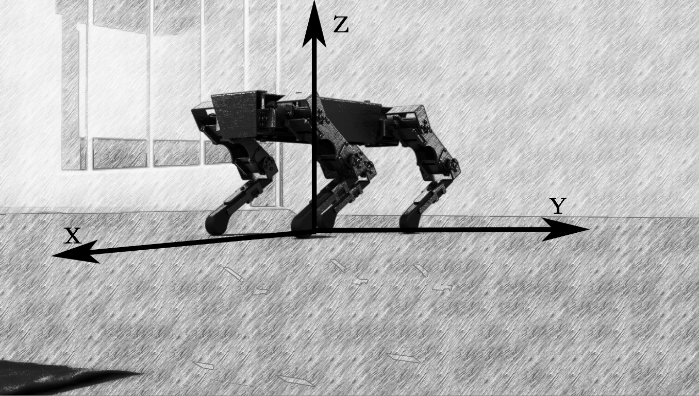

XGO mini 四足机器狗资料大全
- 什么是XGO mini -
一、产品说明

XGO-mini是一款具有十二自由度桌面级Al机器狗，内置勘智K210芯片实现AI边缘计算应用。可实现全向移动、六维姿态控制、姿态稳定、多种运动步态，内部搭载9轴IMU、关节位置传感器和电流传感器反馈自身姿态和关节转角与力矩，用于内部算法和二次开发。支持电脑对机器狗进行图形化和python编程，开发AI应用。
二、产品参数与结构
产品参数
型号：XGO-mini可编程机器狗
尺寸：250x150x60mm
重量：700g
电池：7.4V 2500mAh锂电池
材质：身体-1.5mm航空铝材 腿部-硅胶&尼龙
处理器：K210+STM32
屏幕：240*240像素全彩LCD
摄像头：30万像素OV2640
存储：4G SD卡
充电器额定输入：100-240V~50-60Hz
充电器额定输出：8.4V 1A
产品结构
①AI模组
②AI模组支架
③机器狗前盖
④机器狗后盖
⑤自锁开关
⑥18650 2S电池
⑦核心驱动板
⑧机器狗底盖
⑨充电孔
⑩金属高速磁编码总线舵机
三、AI模组介绍
AI模块作为人工智能相关应用的主控模块，拥有基础计算机视觉识别功能和机器学习模型的推理功能，可帮助实现入门和进阶级别的AI应用。
AI模块
(1)内置勘智K210芯片，采用RISC-V处理器架构，具备视听一体，自主IP核与可编程能力强三大特点。
(2)支持Micro SD卡存储影像、音频、视频、 机器学习模型等资料；
(3)集成摄像头模块的插座，供前置拍摄使用。
屏幕模块
(1)集成摄像头模块插座，供后置拍照使用;
(2)1.54寸LCD全彩屏幕，显示JPG, BMP等格式图片；
(3)可用于外接的2.5mm音频界面；
(4)板载功放芯片及扬声器，支援播放WAV格式的音频文件。
摄像头模块
AI摄像头分辨率为30w像素，可分别插在屏幕模块或者AI模块上，从而变成前置或者后置摄像头。
四、核心技术
IMU姿势自稳
通过IMU获得的姿态数据，采用闭环控制的方式，无论平面如何晃动，机器狗都保持稳定。
整机六自由度姿态控制
足尖不动的情况下，实现身体六个自由度的运动控制。
IMU姿势柔顺
通过IMU获得的姿态数据，闭环控制实现机器狗可以实适应外力，调整到手掰动的目标姿态，实现示教功能。
用户通讯与二次编程接口
开放底层串口协议，用于二次开发和验证。
运动步态规划
机器狗低中高三种姿势匹配三种速度，采用不同的步态策略和规划算法
运动学与动力学仿真接口
在ros环境下，在rviz和gazebo平台上进行运动学与动力学仿真。
全向运动控制
由于具有12个主动关节，通过运动学解耦实现机器狗前进平移转动全向运动，并支持多个方向的运动叠加。
人工智能
机器视觉，人脸识别，语音识别，模行训练等AI功能。
五、学习内容
机械：电机和传动
微型伺服单元结构组成, 整机六自由度运动分析, 单腿三自由度运动分析
运动：运动和动力
推导正逆运动学，完成笛卡尔空间控制和关节空间控制。
感知：陀螺仪+加速度+磁力计
机器狗关节的位置，速度，力矩(电流)等传感器。
控制：控制理论和控制规划
PID控制，轨迹规划控制，空间姿势稳定控制等。
智能：机器狗智能
机器视觉，语音识别，人脸识别,人脸检测，颜色识别等AI技能。
仿真：仿真实践
运动学与动力学仿真。
- 新手上路 -
一、操作说明

二、示例程序
1.准备
将机器狗平铺后按下电源键，机器狗进入默认站立初始状态，此时屏幕亮起如下图所示
初始界面中有4个信息需要我们掌握，A、B和C键在模组上的位置如上图所示。
（1）固件版本：表示当前AI模块的固件版本号，可以在官方网站下载最新版本固件及工具。
（2）操作说明：A、B键操控界面菜单选项的切换，C键表示确认操作，长按C健退出当前程序。
（3）运行上次程序：通过编程将程序上传到AI模块时，可以选择这个选项，让AI模块运行最新一次上传的程序；
（4）尝试示例程序：选择这个选项，可以进入下一个界面，体验存储在AI模块的SD卡中的示例程序。
2.选择示例程序并体验
根据初始界面说明，操作模块进入尝试示例程序界面，按键顺序应该是：B→C。
示例程序列表界面的操作按键与初始界面相同，有3个信息需要我们掌握，
（1）示例程序种类：示例程序分为视觉类和语音类。
（2）示例程序列表：被选中的示例程序会有白框，且名字会亮起；
（3）示例程序序号：本固件版本的示例程序共有17个，斜线左侧的数字为选中的示例程序的序号，斜线右侧的数字为示例程序的总数。
与初始界面相同，我们使用A、B、C键来操作示例程序列表界面：
A键：向上一条示例程序，B键：向下一条示例程序/翻页
C键：选中示例程序并加载，长按C健:退出示例程序至主菜单。
3.示例程序详细说明
| 序号 | 示例程序 | 功能及操作介绍 |
|---|---|---|
| 1 | 表演模式 | 进入程序后，屏幕模组循环显示表情动画，机器狗进入表演模式（执行多种动作）。 |
| 2 | 人脸检测 | 进入程序后，AI模组检测画面中的人脸。如果检测到人脸，屏幕模组显示时会使用矩形框出画面中的人脸，同时机器狗执行握手动作。 |
| 3 | 人脸识别 | 进入程序后，AI模组能够识别到人脸，并框出，标出关键点；按下B键拍下人脸，并标记为master，共可以拍摄3张人脸照片，分别标记为master、friend1、friend2。摄像头再次拍到已标记的人脸时，框会变为绿色，并显示标记及置信度（这张脸在多大程度上是这个标记的脸）。如果识别到master人脸，机器狗会执行三轴转动动作。 |
| 4 | 人脸跟随 | 进入程序后，AI模组进行人脸识别，根据画面中人脸的位置，机器狗自动调整将屏幕正中心对准人脸，形成跟随人脸的效果。 |
| 5 | 口罩检测 | 进入程序后，AI模组进行口罩检测，识别画面中的人像是否配戴了口罩；如果检测到未佩戴口罩，则会以红框标出人像，并显示检测可信度，同时机器狗执行摇头动作；如果检测到佩戴口罩，则会以绿框标出人像，并显示检测可信度，同时机器狗执行点头动作；如果检测可信度小于一定值时，会以蓝框标出人像。 |
| 6 | 猜拳游戏 | 进入程序后，模组会识别画面中的人手，根据手的不同手势，机器狗会显示使机器狗猜拳胜利的图片。(为提高识别准确率，使用时请尽量保证背景简洁，光线充足) |
| 7 | 手势识别 | 进入程序后，模组会识别画面中的人手，根据手的不同手势，机器狗会做出不同的动作。e.g.手势-动作；拳头-转圈；拒绝-趴下；剪刀手-三轴联动；数字6-波浪；ok-坐下。(为提高识别准确率，使用时请尽量保证背景简洁，光线充足) |
| 8 | 手部跟随 | 进入程序后，AI模组进行手部检测，能够识别到手部，并框出，根据画面中手部的位置，机器狗自动调整将屏幕正中心对准手部，形成跟随手部的效果。 |
| 9 | 交通标志识别 | 进入程序后，模组开始识别交通标识，可识别的标识包括：“直行”、“停止”、“禁止通行”和“停车”（标识可见下文1.交通标识）；在识别到标识后，机器狗会执行对应动作：前进、站立、后退、坐下。 |
| 10 | 红绿灯识别 | 进入程序后，当模组识别到绿灯时，会在屏幕上以绿色标志标识出来，同时机器狗开始直行；当模组识别到红灯时，会在屏幕以红色标志标识出来，同时机器狗停止运动。 |
| 11 | 物体分类 | 进入程序后，AI模组进行常见物体识别，如果识别到常见物体，则会在画面中框出，并标识出识别到的物体名称；如果未识别到常见物体，则会提示“Nothing Detected”。此外，当识别到的常见物体为人物(“person”)，机器狗会执行摇摆动作；当识别到的常见物体为狗(“dog”)，机器狗会执行撒尿动作；当识别到的常见物体为猫(“cat”)，机器狗会执行三轴转动动作。 |
| 12 | 骨头识别 | 进入程序后，屏幕提示拍摄骨头的照片，按下B键拍摄骨头的照片（共5张），而后屏幕提示拍摄青菜的照片，按下B键拍摄青菜的照片（共5张）。采样完成后，AI模组会识别骨头和青菜，当识别到骨头时，屏幕出现标识，同时机器狗执行觅食动作；当时别到青菜时，屏幕出现标识，同时机器狗执行站立动作。 |
| 13 | 区域颜色分析 | 进入程序后，屏幕中心会出现采色区域方块，并在屏幕上方显示此时区域内的颜色数值和对应色块。 |
| 14 | 自动学习并追踪颜色 | 进入后，程序首先自动捕捉并学习当前画面中心区域的颜色（持续约2秒）；之后进入追踪阶段，检测出画面中与学习内容颜色相近的区域，将其标识出来。 |
| 15 | 色块追踪 | 进入程序后，模组会识别画面中的色块（纯色方块），并会根据色块和自己的相对位置调整自己的位置。（色块颜色越鲜艳效果越好） |
| 16 | 寻找二维码并解码 | 进入程序后，当屏幕画面中二维码（QR码）时，模组会将其标识出来，并在上方显示解码之后的文字内容。若文字内容为特定的一些命令语句（具体可见下文2.二维码），则机器狗会执行对应动作。 |
| 17 | 普通话识别（cs） | 进入程序后，AI模组进行普通话识别。屏幕显示有多种动作指令语句，当模组识别到动作指令语句时，机器狗会执行对应的动作。 |
| 18 | 音频分析 | 进入程序后，屏幕模块会显示麦克风采集到的音频，同时机器狗会根据音频做出不同的动作，具体为：采集到低音（红色圈），机器狗执行趴下动作；采集到中低音（绿色圈），机器狗执行伸懒腰动作；采集到中高音（蓝色圈），机器狗执行坐下动作；采集到高音（紫色圈），机器狗执行站立动作。 |
4.示例程序所需图片素材
(1) 交通标识图片
-交通标识图片下载-
| 编号 | 标识 | 动作 |
|---|---|---|
| 1 | 前进2s | |
| 2 | 趴下 | |
| 3 | 后退 | |
| 4 | 坐下 |
(2) 二维码识别图片
-二维码图片下载-
| 编号 | 指令 | 示例QR码 | 动作 |
|---|---|---|---|
| 1 | hello | 招手 | |
| 2 | sit down |  |
坐下 |
| 3 | go forward | 前进2s | |
| 4 | go backward | 后退2s | |
| 5 | turn left |  |
左转90 |
| 6 | turn right |  |
右转90 |
| 7 | show | 打开表演模式 |
三、移动端
1.概述
本软件系陆吾智能所开发的机器人控制器，软件通过手机蓝牙和机器人连接，实现数据的双向通讯，为用户提供方便简洁的遥控界面和其他多种多样的控制方式，极大的方便了用户对机器人的控制。
软件无需登录，安装即可使用，能够自动搜索和匹配机器人设备，识别机器人种类。
软件总体上共分为四个部分：主页面、蓝牙界面、设置界面和控制界面。主页面上提供了进入其他界面的入口；蓝牙界面提供和机器人蓝牙连接的交互功能；设置界面提供更改APP相关设置的选项；控制界面提供多种遥控功能。
软件适用于Android 4.4以上（含）系统的手机使用。
2.模块详解
2.1.主页面
点击软件图标 ，进入APP。
首先用户将看到欢迎界面如上图，该界面背景图片是陆吾智能mini版本的四足机器人，另外还显示了当前软件的版本号。欢迎界面持续显示3秒，然后进入主页面。
主页面提供了其他界面的入口，如上图所示，分别介绍如下：
1）蓝牙：若此时没有连接机器人设备，点击蓝牙按钮将进入蓝牙连接界面，可以搜索和连接机器人设备。
注意：此处需要用到手机蓝牙，第一次打开时用户需要授权本APP相应的权限，否则将不能正常使用蓝牙功能。进入蓝牙连接界面时，如果手机蓝牙未打开，将会提示用户打开蓝牙，否则将不能正常使用蓝牙功能。
蓝牙连接界面如下图所示。摇晃手机，APP将自动与最近的机器人设备相连。
若附近有多个设备或用户想通过机器人名称连接设备，可点击搜索按钮，在经过一段时间的搜索后，将会列出附近所有可用设备，如下图所示，点击某一设备名即可连接该设备。
若此时已经连接机器人设备，点击蓝牙按钮将弹出如下图所示窗口，用户可断开连接。
2）标定：点击标定按钮进入标定界面，用以重新设置机器人的初始位置。仔细阅读后点击我知道了，点击进入标定模式按钮，此时机器人各关节舵机将不再输出力矩，外力可转动，用户需将机器人摆放为指定姿势（参见《二次开发手册》），然后点击完成标定按钮，机器人将记录当前位置作为初始位置并自动完成重启。
注意：标定按钮在主界面中默认是隐藏的，用户可以在设置界面中取消隐藏，具体操作请参阅设置一节。该操作属于专业用户操作，操作不可逆，请认真阅读说明后操作。
3）设置：点击设置按钮进入设置界面，如下图所示，用户可以设置“退出APP是否自动关闭蓝牙”，以及设置语言（目前仅支持中、英文）
注意：以开发者身份运行此项目选中是选项时，主界面的标定按钮取消隐藏。
4）关于：点击关于按钮进入关于界面，查看更多关于本产品的信息。
5）控制界面：点击表演模式、整机控制、单腿控制、舵机控制按钮分别进入不同控制界面，在主页面中左右滑动切换不同模式，可对已经连接的机器人设备进行实时控制，具体请参阅下一节。
2.2.控制界面
控制界面使用户能够按照不同方式直接地控制机器人，相当于用户拥有了多个遥控器，分别介绍如下：

1）整机控制：整机控制提供给用户四种操作方式，普通用户通过按钮控制机器人前后左右运动及旋转；进阶用户通过摇杆控制机器人前后左右运动及旋转；XYZ允许用户通过摇杆控制机器人身体三维平移；PRY允许用户通过摇杆控制机器人身体三维旋转。此外通过拖动下方滑杆还可以控制机器人身高，通过点击右上角按钮更改运动模式、开闭陀螺仪等。蓝色表盘显示当前设备电量，未连接设备时电量为0；红色表盘显示当前速度。上两图给出了普通和高级的界面。
2）表演模式：用户通过点击各按钮让机器人执行相应的动作，点击轮播机器人将重复执行所有动作，点击Reset机器人将恢复初始状态。
3）单腿控制：该界面允许用户分别直接控制机器人的某一条腿，通过选择要控制的腿，然后拖动滑杆，即可改变该条腿的三维坐标系空间位置。
4）舵机控制：该界面允许用户分别直接控制机器人的某一个舵机，通过选择要控制的舵机位置，然后拖动滑杆，即可改变相应舵机的角度。
3.功能详解
使用遥控器控制机器人前进功能示例
1）进入APP，进入主页面后点击蓝牙按钮，如上图所示，点击允许打开蓝牙，进入蓝牙连接界面，摇一摇手机，APP将自动连接机器人设备并跳转至主界面。
2）连接成功后，点击整机控制按钮进入遥控界面，以普通控制方式为例，点击左侧向上按键，将看到机器人向前运动，松开按键机器人停止运动。
3）点击左上角返回按钮返回主界面，点击蓝牙按钮断开连接。连续两次点击返回键退出APP。
四、PC端
1.简述
XGO-Blockly是一款为XGO Al模块研发的可视化积木编程平台。用户借助图形化的方式进行程序的编写，也可以直接阅读或编写Python程序。程序编写好以后可以在线执行或者上传到硬件模块中。借助该款平台，用户无需让硬件联网，即可为自己的项目进行AI赋能。
该平台在提供入门Python语法的基础之上（逻辑、循环、数学运算、变量、文字处理、列表、字典、元组、集 合、函数、文件操作、时间）,另外提供了与模块编程&相关的不同类别的功能，如:串口输入输出、10的输入 及输出、按钮/LED灯的控制、麦克风的数据获取、摄像头的控制、音视频处理、模型的使用（包括人脸识别、人脸辨识、物体识别、物体分类器、手写数字识别）。
用户亦可以自行训练基于TinyYOLO或者 MobileNET的模型，通过我们的平台进行格式转换以后，将可以通过编程平台进行编程，直接运行在XGO的AI模块上。
2.使用方法
XGO-Blockly图形化编程工具界面友好，可用于学习人工智能、物联网及Python基础。通过这款工具可以给人工智能套件中的模块编写程序及上传程序。
上图中我们将XGO-Blockly编程界面划分为6个区域：
(1)文档存取区：程序项目命名、保存（保存为.xml档）、删除所有积木及所有积木一键截图
(2)辅助区：样例加载、项目档导入及导出、语言设置
(3)积木指令区：除基础积木以外（由“逻辑”至“串口通讯”），不同模式下拥有不同的扩展积木。
(4)积木编程区：将积木拖入此区域中以进行程序编写。
(5)Python编程区：当用户将积木拖入积木编程区以后，此处将会生成对应Python源代码，支持用户对代码进行编辑、复制、下载及上传，下载后缀为.py格式的python文档。
(6)上传区：用户可选择使用有线上传模式。
编程体验一：在屏幕模块显示Hello World！
首先，打开XGO-Blockly。
接着，将AI模块与屏幕模块拼接好后，用数据线连接模块和电脑，检查上传区是否显示绿色框+对号，以及有COM+数字的串口显示。
保证这两项显示后，可以开始编程。
在积木指令区点按以下指令，并依次拖拽到积木编程区：
（1）扩展模块｜屏幕：“屏幕初始化”、“创建空白画布”、“设定画布坐标”
（2）循环：“一直重复执行”
（3）扩展模块｜屏幕：“屏幕文字”并输入“Hello World！”
（4）扩展模块｜屏幕：“显示画布”
（其中“文字大小”可通过修改数字改变；颜色可选择，此处选为白色）
编程体验二：XGO mini自定义人脸识别
首先，打开XGO-Blockly。
接着，将AI模块与屏幕模块拼接好后，用数据线连接模块和电脑，检查上传区是否显示绿色框+对号，以及有COM+数字的串口显示。
保证这两项显示后，可以开始编程。
在积木指令区点按以下指令，并依次拖拽到积木编程区：
（1）机器狗：“机器狗初始化”
（2）循环：“一直重复执行”
（3）人工智能 | AI模型：实验性功能 “自定义初始化人脸辨识模型”
（4）逻辑：“如果 执行” “ = ”
（5）文字：“ ” 填写Name1
（6）人工智能 | AI模型：实验性功能 “识别到了人脸模型的对象”
（7）机器狗：“机器狗执行 指令” 选择动作
该案例位于 样例->机器狗案例->机器狗-面部识别
- 常见问题 -
一、注意事项
1.长时间不用时请将电池拔下，充电时务必使用本产品指定的充电器。
2.本产品机身为金属材质，使用时请注意安全，运动过程中避免手指夹伤。
3.避免处于潮湿环境下，避免从高处坠落。
4.机器狗运动长时间后舵机可能发烫，属于正常现象，但持续发烫可能损坏舵机性能，因此使用时间不宜过长。
二、保养与储存
注意：保养时请先关闭电源
1.擦拭机器狗裸露的表面，注意不要使控制板沾到水渍。
2.检查螺丝是否松动，并予以紧固。
3.运输或者存储时，请使用XGO专用包装盒，避免发生意外造成损伤；四条腿应当固定，避免晃动引起的摩造成损伤。
三、常见故障及排除
| 故障 | 原因 | 处理方法 |
|---|---|---|
| 上电后开关不亮 | 电池没电或电量低 | 使用适配器充电 |
| 上电后开关亮但不执行动作 | 控制系统异常或者系统处于标定模式 | 联系售后返厂维修 |
| 站立姿势偏离严重 | 初始位置偏离预设值 | 按特殊操作说明重新标定 |
| 某一关节没有力矩输出 | 舵机损坏 | 联系售后返厂维修 |
四、如何更新SD卡文件
关闭拿出sd卡，通过sd卡读卡器在pc上读取sd卡文件，大致目录如下，将原来内容全部清除后，将新的内容填入，目录结构不变（新的内容在sd文件中）
五、如何更新HEX文件
- XGO Mini二次开发指南(1)-基于标准串口协议 -
版本： V1.0
发布日期： 2021/08/05
| 日期 | 原因 | 作者 |
|---|---|---|
| 2021/08/05 | 创建文档、发布文档 | 林涛 |
一、前言
本文档适用于 XGO产品上位机与机器狗之间命令/数据交互的通信协议,采用标准TTL串行通讯，XH2.54 4PIN接口连接。
二、背景知识
XGO-Mini是一款12自由度桌面级机器狗，可以实现全向移动，六维姿态控制，姿态稳定，多种运动步态，内部搭载了9轴的IMU，关节位置传感和电流传感器反馈自身姿态和关节转角与力矩，用于内部算法和二次开发。
用六角螺丝到拧下背部两颗螺丝，左右两侧螺丝，尾部两颗螺丝后，拆除机器狗后背板，注意小心拔掉电源线。
如下图所示主板一侧有两个串口通信接口，按主板丝印线序和上位机线序对接即可以开始调试。两个端子对外供电电压分别是5V和3.3V，但不可同时使用。
默认情况下3.3V端子被AI模块占用，如果想用其他设备进通讯，请将AI模组端子拔下。

三、软件接口
通讯采用固定格式：字头+信息+字尾。
标准TTL串行通讯：
| 波特率 | 115200 |
| 数据位 | 8 |
| 停止位 | 1 |
| 奇偶校验位 | 无 |
1.通信格式
| 长度(Length) | Message | 校验和(CheckSum) | ||||
|---|---|---|---|---|---|---|
| 0x55 | 0x00 | 0x00 | 0xAA | |||
| 整个数据包所占字节数 | 具体数据 | 判断数据是否正确 | ||||
字头：固定格式
长度：数据包长度=字头占位[2]+长度占位[1]+Data占位[x]+校验和占位[1]+字尾占用[2]=6+x
Message：详见 指令
校验和：CheckSum = ~(Length+Message)若括号内的计算和超过255，则取最低的一个字节，然后取反
字尾：固定格式
TIPS：本机接收指令时，如果长度或校验和出错，则认为数据出错，会自动丢弃该数据包。
2.指令
2.1.写指令，无应答 (0x00)
| 长度(Length) | 指令类型 | 首地址 | 数据 | 校验和(CheckSum) | ||||
|---|---|---|---|---|---|---|---|---|
| 0x55 | 0x00 | 0x00 | 0xAA | |||||
| 0x00 | data1,data2... | |||||||
指令：0x00，向内存表连续写入一定字节的数据，不会产生应答
首地址：数据包写入的首地址（详见协议内存表）
数据：连续写入的数据
例：设置机器人最大速度向前运动
0x55 0x00 0x09 0x00 0x30 0xFF 0xC7 0x00 0xAA
字头：0x55 0x00
Length：0x09，数据包共9个字节
Message：0x00无应答写指令，0x30前后移动速度寄存器地址，0xff设置最大速度
CheckSum：0x09+0x00+0x30+0xFF=0x138，取最低字节0x38，取反得0xC7
字尾：0x00 0xAA
2.2.读指令 (0x02)
| 长度(Length) | 指令 | 首地址 | 字节数 | 校验和(CheckSum) | ||||
|---|---|---|---|---|---|---|---|---|
| 0x55 | 0x00 | 0x00 | 0xAA | |||||
| 0x09 | 0x02 | |||||||
指令：0x02，读取内存表中一段连续的字节
首地址：数据包读取的首地址（详见协议内存表）
字节数：连续读取的字节长度
返回数据包格式：
| 长度(Length) | 应答符 | 首地址 | 数据 | 校验和(CheckSum) | ||||
|---|---|---|---|---|---|---|---|---|
| 0x55 | 0x00 | 0x00 | 0xAA | |||||
| 0x12 | ||||||||
应答符：0x12，表明该数据包为读取指令的应答包
首地址：读取指令数据包中的首地址
数据：读取到的数据，长度为相应读取指令要求字节长度
例：读取12个舵机的位置
0x55 0x00 0x09 0x02 0x50 0x0C 0x98 0x00 0xAA
字头：0x55 0x00
Length：0x09，数据包共9个字节
Message：0x02读指令，0x50舵机ID为11位置寄存器地址，0x0C，连续读取12个字节
CheckSum：0x09+0x02+0x50+0x0C=0x67，取反得0x98
字尾：0x00 0xAA
读取返回数据包：
0x55 0x00 0x14 0x12 0x50 0x80 0x80 0x80 0x80 0x80 0x80 0x80 0x80 0x80 0x80 0x80 0x80 0x89 0x00 0xAA
字头：0x55 0x00
Length：0x14，数据包共20个字节
Message：0x12应答符，0x50首地址与相应读取指令一致，0x80共12个，对应12个连续寄存器地址
CheckSum：0x14+0x12+0x50+0x80*12(d)=0x676，取最低字节0x76，取反得0x89
字尾：0x00 0xAA
3.机器人坐标系


下面为XGO内存表
备注：调试模式、整机模式、单腿模式、舵机模式（优先级递减）：当尝试写入这四种模式下的任一寄存器以改变其中数据时，机器人将会默认进入该模式，而另三种模式下的寄存器数据不起作用。默认整机模式。
- XGO Mini二次开发指南(2)-基于ROS开发包 -
XGO Mini二次开发指南(2)-基于ROS开发包
- XGO-Mini二次开发指南(3)-基于Python库文件 -
一、XGO类
所有的功能都是通过XGO所拥有的方法来实现的,在实例化一个XGO类对象时需要传入上位机与机器狗进行串口通讯的物理接口。假设串口通讯接口为COM4，则实例化代码如下。
1 | dog = XGO('COM4') |
下文将借用dog这个对象进行类方法的功能描述。涉及到位姿调整和单腿控制相关的方法，可查看串口通讯协议文档，了解机器人坐标系定义。
二、移动相关方法
1.前后左右平移
move(direction, step)
| 参数名 | 格式 | 输入范围 | 说明 |
|---|---|---|---|
| direction | 字符 | ‘x’、’X’、’y’、’Y’ | ‘x’或’X’使机器狗前进或后退，’y’或’Y’使机器狗左移或者右移 |
| step | 数字 | x:[-25,25],y:[-18,18] | 该参数代表平移步长，根据方向，正值代表前进或左移，负值代表后退或右移。输入值超过范围时，按照极限值移动。 |
2.旋转
turn(step)
| 参数名 | 格式 | 输入范围 | 说明 |
|---|---|---|---|
| step | 数字 | [-150,150] | 该参数代表旋转速度，单位为°/s，正值为左转，负值为右转。 |
3.原地踏步
mark_time(data)
| 参数名 | 格式 | 输入范围 | 说明 |
|---|---|---|---|
| data | 数字 | [10,35] | 该参数代表原地踏步抬腿高度，单位为mm，输入为0时停止原地踏步 |
4.改变迈步频率
pace(mode)
速度 = 步频 x 步幅
| 参数名 | 格式 | 输入范围 | 说明 |
|---|---|---|---|
| mode | 字符串 | [‘normal’,’low’,’high’] | 该参数代表迈步频率，normal为默认步频，low为慢速步频，high为高速步频 |
5.停止移动
stop()
1 | 示例 |
库中基于这些方法封装了一系列方法以便于使用。
| 方法名 | 说明 |
|---|---|
| move_x(step) | 前后移动，相当于move(‘x’, step) |
| move_y(step) | 左右移动，相当于move(‘y’, step) |
| forward(step) | 前进，相当于move(‘x’, abs(step)) |
| back(step) | 后退，相当于move(‘x’, -abs(step)) |
| left(step) | 左移，相当于move(‘y’, abs(step)) |
| right(step) | 右移，相当于move(‘y’, -abs(step)) |
| turnleft(step) | 左转，相当于turn(abs(step)) |
| turnright(step) | 右转，相当于turn(-abs(step)) |
三、位姿相关方法
调节位姿时，机器狗四条腿足端位置不发生改变，机身的位置或角度发生变化。
1.机身位置平移
translation(direction, data)
| 参数名 | 格式 | 输入范围 | 说明 |
|---|---|---|---|
| direction | 单字符或字符列表 | ‘x’、’y’、’z’或包含以上值的列表 | ‘x’代表前后平移，’y’代表左右平移，’z’代表身高 |
| data | 数字 | x:[-35,35],y:[-18,18],z:[75,115] | 该参数代表机身位置平移距离，单位为mm |
2.机身姿态调整
attitude(direction, data)
| 参数名 | 格式 | 输入范围 | 说明 |
|---|---|---|---|
| direction | 单字符或字符列表 | ‘r’、’p’、’y’或包含以上值的列表 | ‘r’代表滚转角，’p’代表俯仰角，’y’代表偏航角 |
| data | 数字 | r:[-20,20],p:[-15,15],y:[11,11] | 该参数代表机身位置平移距离，单位为° |
3.机身周期平移
periodic_tran(direction, period)
机器狗机身将以指定周期和方向进行往复平移，幅度为位置平移极限值的一半，可以同时进行多个方向的周期运动。机身周期运动和整机运动不可同时进行。
| 参数名 | 格式 | 输入范围 | 说明 |
|---|---|---|---|
| direction | 单字符或字符列表 | ‘x’、’y’、’z’或包含以上值的列表 | ‘x’代表前后平移，’y’代表左右平移，’z’代表身高 |
| period | 数字 | [1.5,8] | 该参数代表运动周期，单位为s;输入0时代表停止运动 |
4.机身周期旋转
periodic_rot(direction, period)
| 参数名 | 格式 | 输入范围 | 说明 |
|---|---|---|---|
| direction | 单字符或字符列表 | ‘r’、’p’、’y’或包含以上值的列表 | ‘r’代表滚转角，’p’代表俯仰角，’y’代表偏航角 |
| period | 数字 | [1.5,8] | 该参数代表运动周期，单位为s;输入0时代表停止运动 |
1 | 示例 |
四、其余方法
1.恢复初始状态
reset()
停止所有运动，所有状态全部恢复到初始状态
2.设置自稳状态
imu(mode)
自稳状态下，机器狗将自动调节姿态角以保持背部处于水平位置，不可在开启时手动设定姿态角。
| 参数名 | 格式 | 输入范围 | 说明 |
|---|---|---|---|
| mode | 整数 | 0、1 | 0代表关闭、1代表开启 |
3.单腿控制
leg(leg_id, data) 控制指定腿的足端位置
| 参数名 | 格式 | 输入范围 | 说明 |
|---|---|---|---|
| leg_id | 整数 | 1、2、3、4 | 分别代表左前腿、右前腿、右后腿、左后腿 |
| data | 长度为3的数字列表 | x:[-35,35],y:[-18,18],z:[75,115] | 该参数代表足端位置，单位为mm |
1 | 示例 |
4.舵机控制
motor(motor_id, data)
控制舵机旋转角度
| 参数名 | 格式 | 输入范围 | 说明 |
|---|---|---|---|
| motor_id | 整数或整数列表 | [11,12,13,21,22,23,31,32,33,41,42,43] | 第一位数字代表舵机所在的腿，第二位数字代表在该腿上的位置，从下到上依次是1，2，3 |
| data | 数字或数字列表 | 下:[-65, 73],中:[-66, 93],上:[-31, 31] | 该参数代表足端位置，单位为° |
1 | 示例 |
5.单腿舵机卸载
unload_motor(leg_id)
使一条腿上的三个舵机卸载，不输出力矩，之后可以随意用手转动，一般用于编写动作
| 参数名 | 格式 | 输入范围 | 说明 |
|---|---|---|---|
| leg_id | 整数 | 1,2,3,4 | 分别代表左前腿、右前腿、右后腿、左后腿 |
6.所有舵机卸载
unload_allmotor()
使所有舵机卸载，不输出力矩，可以随意用手转动
7.单腿舵机加载
load_motor(leg_id)
使一条腿上的三个舵机保持当前位置加载，输出力矩，之后不可以用手转动，一般用于编写动作
| 参数名 | 格式 | 输入范围 | 说明 |
|---|---|---|---|
| leg_id | 整数 | 1,2,3,4 | 分别代表左前腿、右前腿、右后腿、左后腿 |
8.所有舵机加载
load_allmotor()
使所有舵机保持当前位置加载，输出力矩，之后不可以用手转动
9.设置舵机转动速度
motor_speed(speed)
调节舵机转动速度，适用于单独控制舵机的情况
| 参数名 | 格式 | 输入范围 | 说明 |
|---|---|---|---|
| speed | 整数 | [1,255] | 1为最低速，255为最高速 |
10.执行预设动作
action(action_id)
| 参数名 | 格式 | 输入范围 | 说明 |
|---|---|---|---|
| action_id | 整数 | [1,255] | ID与动作对应关系见下表 |
| ID | 动作 | ID | 动作 | ID | 动作 |
|---|---|---|---|---|---|
| 1 | 趴下 | 2 | 站起 | 3 | 匍匐前进 |
| 4 | 转圈 | 5 | 原地踏步 | 6 | 蹲起 |
| 7 | 转动Roll | 8 | 转动Pitch | 9 | 转动Yaw |
| 10 | 三轴转动 | 11 | 撒尿 | 12 | 坐下 |
| 13 | 招手 | 14 | 伸懒腰 | 15 | 波浪 |
| 16 | 左右摇摆 | 17 | 求食 | 18 | 找食物 |
| 19 | 握手 | 20 | 拜年 |
五、读取相关方法
读取舵机角度
read_motor()
读取12个舵机的角度
读取成功则返回长度为12的列表，对应编号[11,12,13,21,22,23,31,32,33,41,42,43]的舵机角度
读取失败则返回空列表
读取电池电量
read_battery()
读取当前电池电量
读取成功则返回1-100的整数，代表电池剩余电量百分比
读取失败则返回0